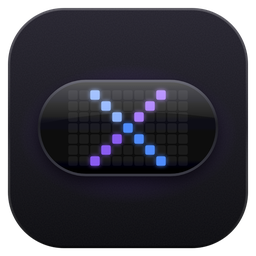

Xirus Isle privacy policy
Last updated: 14 November 2026
Short version: Xirus Isle has no account and no telemetry. It doesn't collect, sell or share anything about you. Everything stays on your PC, except the few optional lookups listed below.
Who makes Xirus Isle
Xirus Isle is made by Janxirus, an independent developer in Karlskrona, Sweden. Contact: janxirus.dev@gmail.com.
What stays on your PC
Your settings, notes, to-do lists, clipboard history, shelf files, app shortcuts and the notifications Xirus Isle shows are stored only on your PC, in the app's own data folder. Xirus Isle reads what's playing from Windows' media controls and the sound level of your music player to draw the visualizer. None of this is sent anywhere.
What goes over the internet
Only these, and only for the features you use:
| Feature | Sent to | What's sent |
|---|---|---|
| Synced lyrics | lrclib.net | The song's title, artist and length |
| Weather and rain alerts | Open-Meteo | The city you typed (only if you set one) |
| AI summary, Anthropic option | Anthropic | The titles and text of the notifications that waited, using your own API key |
| Xirus Isle Pro purchase | Microsoft Store | Handled by Microsoft; Xirus Isle only asks the Store whether Pro is owned |
| Settings sync (optional) | Your own OneDrive folder | Your settings file |
The AI summary's "On this PC" option runs entirely on your computer. Favourite sites open in your own browser.
Windows notifications
If you turn on "Windows notifications", Windows asks you to allow Xirus Isle to read your notifications so it can show them on the island. They are shown and kept on your PC only (and, if you choose the Anthropic AI summary, sent as described above). You can turn this off in Xirus Isle or in Windows' privacy settings at any time.
Payments
Xirus Isle Pro is bought through the Microsoft Store. Microsoft handles the payment; Xirus Isle never sees your payment details. See Microsoft's privacy statement.
Children
Xirus Isle doesn't knowingly collect any information from anyone, including children.
Deleting your data
Uninstalling Xirus Isle removes its data folder. You can also open it from Settings › About › Open data folder and delete it.
Changes
If this policy changes, the new version is posted on this page with a new date.